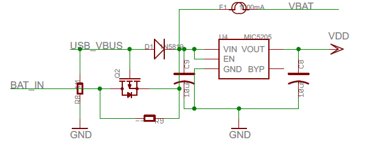

- Less than half the size of a business card ( 54mm x 41mm )
- STM32F103RCT6 32-bit 72MHz ARM Cortex M3 CPU
- 256KB of Flash memory, 48KB of RAM
- Micro USB connector
- Input Voltage Range of 3.6v to 15v
- Battery connector (JST PHR-2 2 Pin)
- Built-in SD card connector
- Red, Green and Blue LEDs
- Pads to allow HC-05 Bluetooth modules to be added
- 0.1" Pin spacing
- 44 GPIO Pins, capable of: 26 PWM Pins, 16 ADC Pins, 3 USARTs, 2 SPI, 2 I2C and 2 DACs
- Prototype area which can be used in many different configurations, for example: Servo Headers, Up to 14x 500mA outputs, 2x .NET Gadgeteer connectors, or NRF24L01+ wireless transceiver modules
- Rev 1v4: CE and RoHS certification
Features
Pinout
- Purple boxes show pins that are used for other functionality on the board. You should avoid using these unless you know that the marked device is not used.
- ! boxes contain extra information about the pin. Hover your mouse over them to see it.
- 3.3v boxes mark pins that are not 5v tolerant (they only take inputs from 0 - 3.3v, not 0 - 5v).
- 3.3 is a 3.3v output from the on-board Voltage regulator.
- GND is ground (0v).
- VBAT is the battery voltage output (see the Espruino Board Reference).
- ADC is an Analog to Digital Converter (for reading analog voltages)
- DAC is a Digital to Analog Converter (for creating analog voltages). This is not available on all boards.
- PWM is for Pulse Width Modulation. This creates analog voltages from a digital output by sending a series of pulses.
- SPI is the 3 wire Serial Peripheral Interface.
- USART is a 2 wire peripheral for Serial Data.
- I2C is the 2 wire Inter-Integrated Circuit bus.
- CAN is for the Controller Area Network. It is not supported by Espruino.
Information
Tutorials
- Quick Start (USB)
- Quick Start (Writing Code)
- .NET Gadgeteer Modules
- Infrared Remote Control
- Dial Tones
- Understanding PWM and Implementing it Yourself
- Flashing Lights
- Single Button Combination Lock
- Using BTN1 to turn on an LED
- Espruino Web IDE
- Advanced Debug
- Heater Controller
- Wireless Temperature Sensor
- WiFi Enabled Thermometer
- Favourite Icon on Web Server
- Remote Control Sockets
- Soldering an LCD directly to Espruino
- Motion Sensing Lights
- Morse Code Texting
- MeArm Robotic Arm
- Infrared Remote Control
- Individually Addressable LEDs
- Graphical Web Interface
- Dial Tones
- Wifi Remote Console
- WiFi Xively Humidity/Temperature Sensor with Display
- Digital Dice
- Simple Data Logger
- Small Solar Powered Espruino
- Mounting the Espruino Board
- Water Physics with Servo Motors
- Pocket 'walking' GPS
- KeyPad Timer
- KeyPad Combination Lock
- Temperature Graph on a PCD8544 display, with DS18B20 temperature sensor
- Temperature on a PCD8544 display, with DS18B20 temperature sensor
- Making Sounds and Music
- LED Clock (using WS8111)
- Remote Control Helicopter with Wii Nunchuck
- LED Volume (VU) Meter
Power
Espruino has 3 ways of powering it - a JST PHR-2 Battery connector, Micro USB, or pin headers. Both the Micro USB and Battery connector can power the device (and pin headers), and the source of power will be automatically switched. If you power Espruino via the Pin Headers, do not plug a battery in, and do not plug in USB unless you are powering it with 5v or more. If you wish to power Espruino from mains, we'd suggest using a Micro USB phone charger. This are widely available as the majority of mobile phones (with the exception of iPhones and low-end Nokias) now use them.
In order to protect the Espruino board (and what it is connected to), a 1000mA thermal (self-resetting) fuse is on the board between the pins marked 'Bat' on the board and the power source (USB/Battery). See Connecting Batteries below for information on connecting Batteries.
Connecting
NOTE: The Espruino board has no case and so the USB connector is completely unsupported. This means it is relatively delicate (especially on rev 1v3 boards) and needs to be treated carefully. Try and pull the connector straight out, and do not push down on the board when the connector is inserted, or try and move the board around using the cable.
Pin Strip
There's a Pin Strip page covering how to solder Pin Strip onto the Espruino BoardBatteries
You can usually buy batteries with the PH-type 2 pin female JST (PHR-2) connector ready-soldered, see Battery for more details on battries and connectors.
Servo Motors
See the Pin Strip page for ideas on how to connect servos, and the Servo Motors page on how to control them.
Motor Drivers
To drive motors there are two good options - both of which solder on to the prototype area (which is designed for SOIC-style chips). The surface mount versions of these will require some soldering skills, so if you only need to turn motors on and off (and not drive them at different speeds) then a Relay Module might be easier.
L293D
The L293D is slightly more expensive, but has four outputs, each of which can pull up to a voltage as well as down to 0v. This makes it ideal for driving motors in forwards and reverse, as each side of the motor can be connected to an output.
ULN2003
The ULN2003 has 7 x 500mA outputs, but they can only pull down to 0v. This makes it great for powering relays, solenoids and stepper motors - but only useful for motors if you only need them to run in a single direction.
Bluetooth
Espruino is designed for HC-05 modules. Have a look at the Bluetooth page for more information.
Known Problems
- PWM output (via
analogWrite) on B4 and A6 at the same time is not possible (as they share timer hardware) - You can't setWatch on two pins with the same number (eg. A5 and C5) - this is a limitation of the STM32F1
- You can't use
setWatchon B11/C11/D11 and enablesetDeepSleep, as A11 is watched in order to wake when USB is plugged in - The USB bootloader as shipped on Espruino KickStarter boards requires the APB1 clock frequency to be changed before it will work reliably. This is automatically handled by the Web IDE's flasher, and also Espruino's version of stm32loader.py if you supply the
-kswitch.